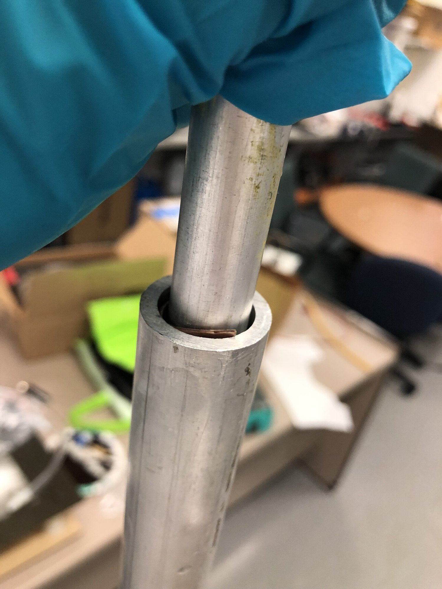
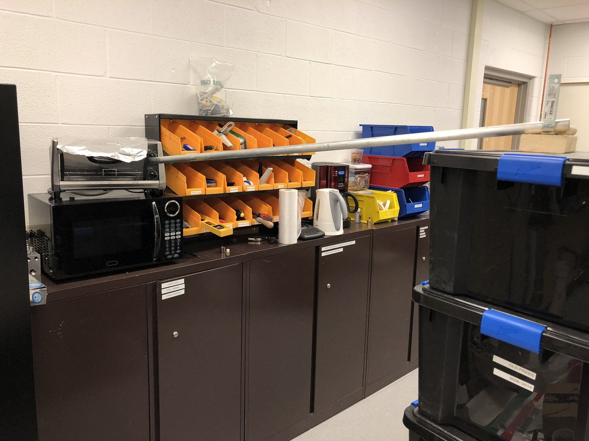
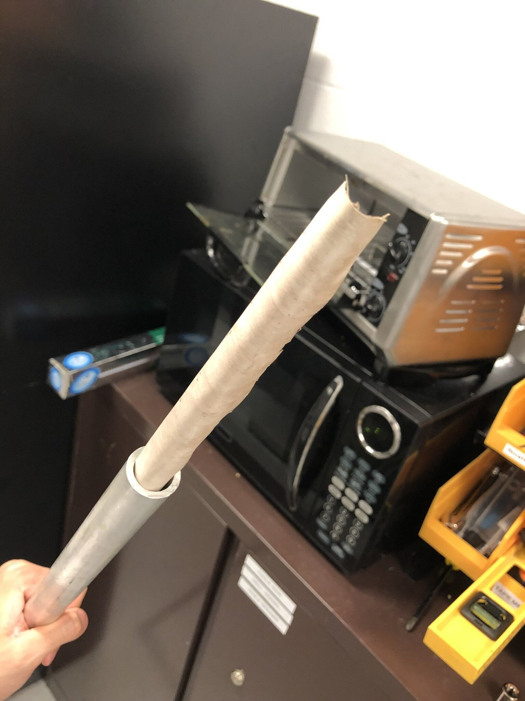
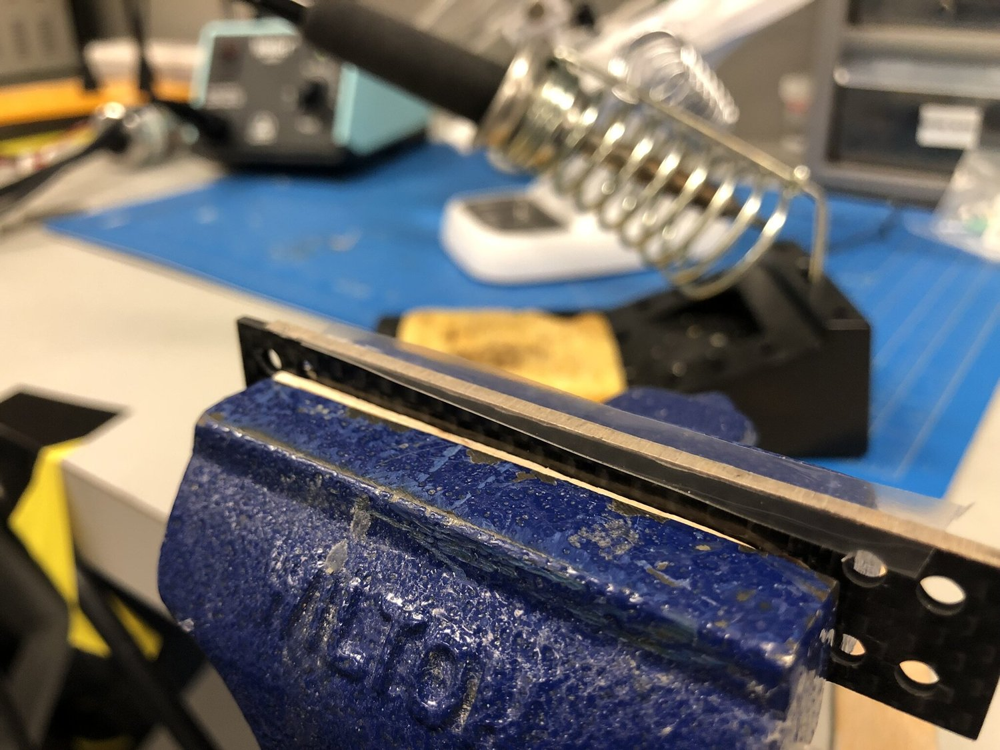
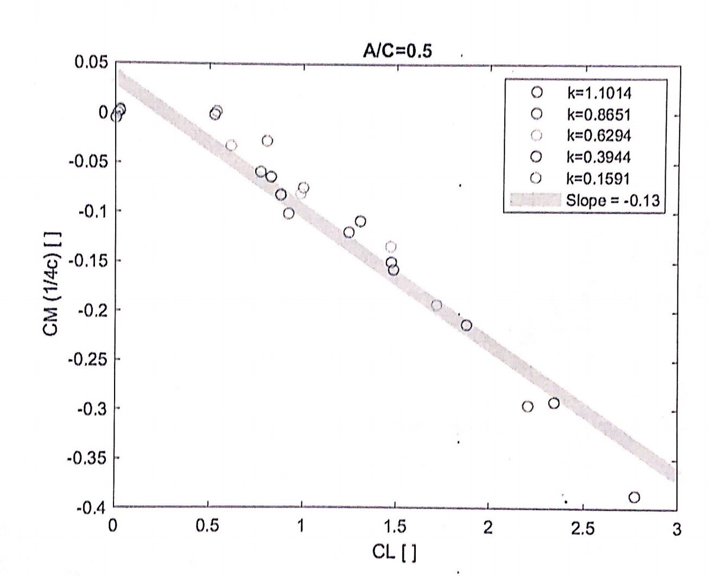

Wing Structure
The thumbnail of the above video shows an inner wing made up of carbon fibers, veneer, and monokote®. In the video, the motor runs at low throttle, so as to avoid significant vibration caused by an unbalanced left-hand-side mass.
At the very beginning, ribs were made of wood, but a drop-test suggested using a carbon fiber reenforced polymer (CFPR) sheet for higher impact resistance (see the following video for comparison).
Fabrication of the leading edge is interesting. Veneers are typically sold in flat sheets. I get them curved in fiber direction with following steps.

1. Soak the veneer in boiling water until it get soft. Then press it into a metal tube.

2. Bake the tube.

3. Check the curvature. If not curved enough, repeat above steps with binder clips.
The above procedure gives the veneer an almost-uniform high curvature. That is not enough. Leading edge is a place where curvature changes rapidly. Thus, some post-processing is needed so that veneer better follows the shape of leading edge.
I use monokote for the skin. I love its heat-activated adhesive. Sadly, that monokote adhesive easily detaches from CFRP surface. The good thing is, a 1/16’’ width veneer stripe is enough to make the CFRP ribs monokote-friendly (see following picture).

Monokote attached well on the veneer. The veneer stripe is very light. The soldering iron works quite well for a thin stripe contact surface.
I wouldn’t worry much about the wing. I would worry about the tail and aircraft dynamics. Before Thanksgiving, I sized the tail so that the ornithopter has a 0.3 static margin at glider mode (see attached pdf).
ControlSurfaceSizing_Nov19.pdf
What about flapping mode? Water tunnel testing from the University of Bath (N. Chiereghin et al.) gave time-averaged values of CL and CM (w.r.t. quarter chord). I digitalized them and did the following plot and find two interesting things.

First, the time-averaged CL CM relation doesn’t depend on reduced frequency k. So ornithopter’s static stability doesn’t depend on flapping frequency?
Second, a negative slope (note that CM above is already w.r.t. quarter chord)indicates that the static aerodynamic center of the ornithopter moves further back when it switches from glider mode to flapping-wing mode. So, flapping wings is more statically stable than fixed wings?
I doubt my analysis. I think I cannot really talk about static stability for the inherently no-really-static ornithopter flight. I am afraid I made a wrong judgment.
Citation:
Chiereghin, N, et al. “Unsteady Lift and Moment of a Periodically Plunging Airfoil.” AIAA Journal, vol. 57, no. 1, American Institute of Aeronautics and Astronautics, 2019, pp. 208–22, doi:10.2514/1.J057634.